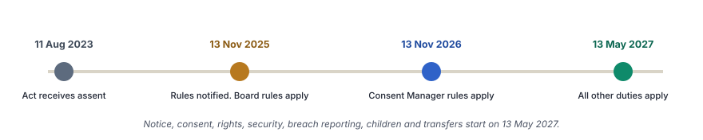
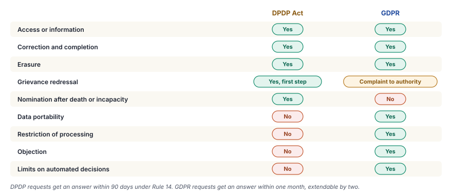
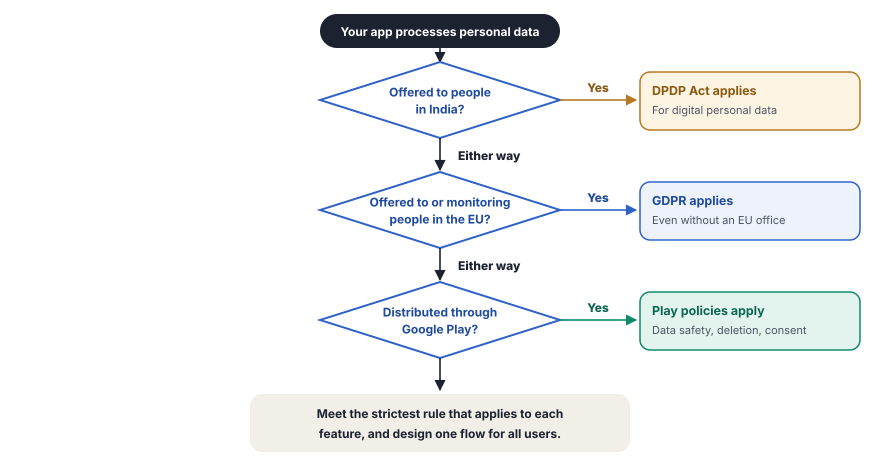

The DPDP Act sets the rules for personal data in India. The GDPR adds its own rules when an app reaches Europe, and Google Play checks both at the store.
If you build an Android app in India, the Digital Personal Data Protection Act, 2023 (DPDP Act) is the first law that applies to it. The Act and the DPDP Rules, 2025 decide how you collect, use, store and delete the personal data of your users. They also decide whom you tell when something goes wrong, and what a mistake costs.
Few apps stay inside one country. Once your app reaches users in the European Union (EU), the General Data Protection Regulation (GDPR) applies as well. Its ideas are close to those of the DPDP Act, but the details differ in many places. Google Play adds a third layer with its own policies, and they apply to every app in the store.
This article follows the DPDP Act topic by topic. For each topic, it first explains the Indian rule and then shows where the GDPR differs. After the two laws, it turns to Google Play and ends with a checklist for your app. Each rule links to its original text wherever possible. The article explains the rules, but it is not legal advice.
![On the left, the DPDP Act of India, with the Act of 2023 and the Rules of November 2025. It covers digital personal data only, allows processing on consent or a listed legitimate use, requires a report for every breach and applies in full from May 2027. On the right, the GDPR of the European Union, Regulation 2016/679 in force since 2018. It covers digital and paper records, has six lawful bases, requires breach reports based on risk and allows fines up to 4% of turnover. In the middle, an app with users in India and in Europe. Below, Google Play policies such as the Data safety form, account deletion and consent tools turn many duties into store rules.](../assets/img/diagrams/gd-overview.svg)
The DPDP Act in stages
The President gave assent to the DPDP Act on 11 August 2023. The government notified the Rules on 13 November 2025 and chose to bring them into force in three steps. The rules on the Data Protection Board of India took effect on the same day. The rules on Consent Managers take effect one year later. Almost every other duty, from notice and consent to breach reporting, starts on 13 May 2027.
That date sounds far away, but it is close for a real product. A change to the data flows, consent screens and vendor contracts of an app often takes a year or more. Europe gives no such grace period, because the GDPR took full effect on 25 May 2018.

Parts of this article
Everything in the DPDP Act starts with one short definition.
"personal data" means any data about an individual who is identifiable by or in relation to such data;
The definition is wide on purpose. A name, an email address and a phone number are personal data. So are a device identifier, a precise location, a photo and a voice note, because each of them can point to a person. Data stays personal even when you need a second table to find the name. A user ID in your database is personal data, because your own records link it to a person.
One class of data in India
The DPDP Act does not sort personal data into normal and sensitive classes. Health records, bank details, religion and an email address all get the same protection. Before the Act, the Information Technology (IT) Rules of 2011 had a class called sensitive personal data or information (SPDI). Those rules rested on Section 43A of the IT Act. The DPDP Act removes that section and creates no new sensitive class.
The Act still gives extra care in two places. The data of children has its own duties, which Part 3 explains. The government can also name a Significant Data Fiduciary (SDF), and the sensitivity of the data is one factor in that choice.
Special categories in the GDPR
The GDPR takes the opposite approach. Article 9 lists special categories of personal data. These are health, genetic data, biometric data for identification, racial or ethnic origin, religion, political opinions, union membership and sex life or sexual orientation. The GDPR forbids the processing of these categories unless one of ten exceptions applies, such as explicit consent. Article 10 adds separate rules for data on criminal convictions.
So the same data can carry a different weight in the two laws. A food preference that reveals a religion is ordinary personal data in India. In Europe, it becomes special category data. An app that serves both regions designs for the stricter case.
![On the left, the terms in GDPR and DPDP. Personal data is any data about an identifiable person. GDPR adds special categories, namely health, genetic data, biometric data for identification, race, religion, political opinions, union membership and sex life, and separate rules for criminal records data in Article 10. The DPDP Act has one category only and no sensitive class. On the right, terms from US laws and industry. PII identifies a person in NIST guidance. NPI is financial data under the Gramm-Leach-Bliley Act. PHI is health data under HIPAA. MNPI is price-sensitive company data under securities law. SPI is a common industry term whose meaning varies.](../assets/img/diagrams/gd-data-kinds.svg)
Terms from other laws
Privacy documents in India often borrow terms from the United States (US). They are useful in conversation, but neither the DPDP Act nor the GDPR uses them.
- Personally identifiable information (PII) is information that identifies a person, in the guidance of the National Institute of Standards and Technology (NIST).
- Nonpublic personal information (NPI) is financial data about consumers under the Gramm-Leach-Bliley Act.
- Protected health information (PHI) is health data under the Health Insurance Portability and Accountability Act (HIPAA).
- Material nonpublic information (MNPI) is information that can move the price of a share. It belongs to securities law, not privacy law.
- Sensitive personal information (SPI) is a common industry term with no fixed meaning.
In a document for an Indian client or regulator, use the terms of the Act. Say personal data, and drop the other labels.
Personal data on an Android device
On a phone, much of the personal data never comes from the keyboard. It comes from identifiers that the app reads from the device or creates itself. Each of them is personal data under both laws once it links to a person. Over recent releases, Android closed access to the most permanent ones. The Android guide on user data and identifiers explains the choices that remain.
![Three groups. Not available to normal apps are the IMEI and serial number, restricted since Android 10, the ICCID of the SIM, where apps use the subscription ID instead, and the MAC address, which is hidden or randomized. Available with care are the Android ID, scoped to the app signing key and user, the phone number, which needs a runtime permission, and precise location, which is sensitive. Recommended are the advertising ID, resettable and for ads only, the app set ID for analytics across own apps and the Firebase installation ID, scoped to one install and resettable. Every identifier counts as personal data under GDPR and DPDP once it can be linked to a person.](../assets/img/diagrams/gd-android-ids.svg)
| Identifier | Access for a normal app | Advice |
|---|---|---|
| IMEI and serial number | Blocked since Android 10. Only system apps hold READ_PRIVILEGED_PHONE_STATE. | Do not use |
| ICCID of the SIM card | Blocked | Use the subscription ID for SIM logic |
| MAC address | Hidden. getHardwareAddress() returns null, and Wi-Fi uses a random address for each network. | Do not use |
| Android ID (SSAID) | Available. Since Android 8, each app signing key, user and device gets its own value. | Use only for fraud checks or to link your own apps |
| Phone number | Needs a runtime permission such as READ_PHONE_NUMBERS | Let the user type it, or use a sign-in service |
| Advertising ID | Available through Google Play services. Apps that target API level 33 or higher declare the AD_ID permission. | Use only for ads. After the user deletes it, the app reads zeros. |
| App set ID | Available through Google Play services | Use for analytics across your own apps |
| Firebase installation ID or your own random ID | The app creates it | The default choice for analytics and app state |
The table leads to two simple rules. Pick the identifier with the narrowest scope that does the job, which for most analytics is a random ID for each install. Never link a resettable identifier to a permanent one, because the link undoes the reset. Google Play policy forbids that link for the advertising ID.
Once you know which data is personal, the next step is to find out whose duty it is to protect it.
Scope of the DPDP Act
The DPDP Act applies to digital personal data that a business processes in India. It covers data collected in digital form and data collected on paper and digitized later. It also reaches businesses outside India when they process data to offer goods or services to people in India (Section 3). A foreign app that serves Indian users follows the Act, even without an office here.
Two kinds of data stay outside the Act. The first is data that a person uses for personal or domestic purposes, such as the contacts on her own phone. The second is data that the person made public herself, or that someone else published under a legal duty. A public profile that a user posts on her own falls in this second group.
Scope of the GDPR
The GDPR covers digital data and also paper records that form part of a filing system. It applies to every organization established in the EU. It also applies to an organization outside the EU that offers goods or services to people in the EU or monitors their behavior there (Article 3). Such an organization usually names a representative in the EU (Article 27). Unlike the DPDP Act, the GDPR has no general exclusion for public data.
For an Indian company, this means that an app offered to users in Europe brings the GDPR into play. An office in Europe is not the test. The users are.
![The DPDP Act covers digital personal data in India, paper data that is later digitized and data processed abroad for goods or services offered in India. The GDPR covers data processed by automated means, paper records in a filing system, organizations in the EU and offers to or monitoring of people in the EU. The DPDP Act excludes personal or domestic use and data that the person made public or that someone published under a legal duty. The GDPR excludes purely personal or household use and has no general exclusion for public data.](../assets/img/diagrams/gd-scope.svg)
Roles in the DPDP Act
The Act gives new Indian names to roles that privacy law knew long before it. The GDPR uses the older terms for most of them. Two Indian roles have no European counterpart at all.
![Five rows. A Data Principal in DPDP is a data subject in GDPR, the person the data is about, and DPDP also includes the parent of a child and the guardian of a person with a disability. A Data Fiduciary is a controller, which decides the purpose and the means. A Data Processor is a processor, which acts on behalf of the fiduciary. A Significant Data Fiduciary has no GDPR equivalent. The government names it, and it has extra duties such as a DPO in India, yearly audits and impact assessments. A Consent Manager has no GDPR equivalent. It is registered with the Board and gives one place to give, review and withdraw consent.](../assets/img/diagrams/gd-roles.svg)
- Data Principal. The person whom the data is about. For a child, the term includes the parent. For a person with a disability, it includes the lawful guardian. The GDPR calls this person the data subject.
- Data Fiduciary. The business that decides the purpose and the means of the processing. It carries almost every duty in the Act. The GDPR calls it the controller.
- Data Processor. A business that processes data for a fiduciary under a contract, such as a cloud provider or an analytics vendor. Under the Act, the fiduciary stays responsible for the work of its processors.
- Significant Data Fiduciary. A fiduciary that the government names because of the volume and sensitivity of its data and other risks. It appoints a Data Protection Officer (DPO) based in India and an independent data auditor. Every 12 months, it runs a Data Protection Impact Assessment (DPIA) and an audit. It also checks that its algorithms do not put the rights of users at risk.
- Consent Manager. A company registered with the Board that gives people one place to give, review and withdraw consent across many apps. It needs a net worth of at least 2 crore rupees.
In Europe, some of the SDF duties apply to every controller. Any controller with high-risk processing runs a DPIA (Article 35). Public bodies and controllers that monitor people or handle special category data at a large scale appoint a DPO (Article 37).
As a fiduciary, your first duty is to have a valid ground for each use of personal data. In India, that ground is almost always consent.
Two grounds in the DPDP Act
The Act allows processing on two grounds only. The first is the consent of the Data Principal (Section 6). The second is a short list of certain legitimate uses (Section 7). These include legal duties, court orders, medical emergencies, disasters, employment and some services of the State.
For an app, the most useful legitimate use is in Section 7(a). It covers data that a person gives voluntarily for a specific purpose, as long as she does not object to that use. A user who types her address to get a delivery gives it for that purpose. The app can use the address for the delivery without a separate consent. It cannot use the same address for marketing.
Everything else needs consent, and the Act sets a high bar for it.
The consent given by the Data Principal shall be free, specific, informed, unconditional and unambiguous with a clear affirmative action, and shall signify an agreement to the processing of her personal data for the specified purpose and be limited to such personal data as is necessary for such specified purpose.
Each word in that sentence has a practical effect. Free and unconditional mean that the app does not force the user to accept unrelated purposes to get the service. Specific means one purpose at a time. A clear affirmative action means that a box ticked in advance is not consent. The consent also covers only the data that the purpose needs. Under Section 6(4), the user can withdraw consent as easily as she gave it.
Six grounds in the GDPR
The GDPR offers six legal bases in Article 6, and consent is only one of them. An app in Europe often relies on the contract for its core service and on legitimate interests for fraud checks or basic analytics. The DPDP Act has neither of these grounds. So an Indian app asks for consent in places where a European app does not.
![On the left, the DPDP Act in Sections 4 to 7 allows two grounds. Consent must be free, specific, informed, unconditional and unambiguous with a clear affirmative action, and withdrawal must be as easy as giving it. Certain legitimate uses cover data the person gave for a purpose and did not object to, state services, legal duties, court orders, medical emergencies, disasters and employment. On the right, GDPR Article 6 has six bases, namely consent, contract, legal obligation, vital interests, public task and legitimate interests. Contract and legitimate interests have no direct DPDP equivalent.](../assets/img/diagrams/gd-grounds.svg)
When consent is the ground, the two laws ask for almost the same thing. The GDPR definition in Article 4(11) also asks for a freely given, specific, informed and unambiguous indication through a clear affirmative action.
The notice before consent
Consent is only informed when the user reads a notice first. Section 5 of the Act and Rule 3 of the Rules decide what that notice contains. It lists the personal data and the purpose of each use. It gives a link to withdraw consent and to use each right. It also tells the user how to complain to the Data Protection Board.
Rule 3 adds that the notice must make sense on its own. A notice that the user can only follow by reading the terms of service fails this test. The user can read the notice in English or in any of the 22 languages in the Eighth Schedule of the Constitution.
The GDPR asks for more detail in its notice (Articles 13 and 14). It adds the identity of the controller, the legal basis of each purpose, the recipients, transfers outside Europe and the retention period. A short notice in the app with a link to a full privacy policy meets both laws.
| Item in the notice | DPDP Act and Rule 3 | GDPR, Articles 13 and 14 |
|---|---|---|
| Data and purpose | An itemized list of the data and a clear description of each purpose | The purposes and the legal basis of each one |
| Withdrawal and rights | A link to withdraw consent and to use each right | The rights, including withdrawal of consent |
| Complaints | The way to complain to the Data Protection Board | The right to complain to a supervisory authority |
| Contacts | A contact who answers questions on data, or the DPO | The identity of the controller and the contact of the DPO |
| Recipients, transfers and retention | Not required | Required |
| Language | English or a language in the Eighth Schedule | Clear and plain language |
A good consent screen
The figure shows a consent form for ads in the style that is common in Europe. The same qualities make any consent screen valid under the DPDP Act.
![A phone shows a consent form for an example app. It lists three purposes, namely personalized ads, measurement of ads and content and storage of information on the device. It says that partners can process the data and that the choice can change at any time in Settings. It has a Consent button, an equal Do not consent button and a Manage options link. Notes name four qualities. Purposes are in plain words before the choice, refusing is as easy as accepting, each purpose and partner can be set apart and a link in Settings reopens the form.](../assets/img/diagrams/gd-consent-form.svg)
- Plain purposes. The screen lists each purpose in simple words before the choice. A single vague purpose, such as "to improve our services", is not specific.
- Equal choices. Refusal takes the same effort as acceptance. A small grey link under a large blue button pushes the user toward one answer.
- Detailed control. The user can set each purpose and each partner apart. Consent to ads stays separate from consent to a newsletter.
- Easy withdrawal. A link in Settings opens the same form again at any time.
- A record. The app stores the version of the notice, the choice, the time and the user ID. In a dispute, Section 6(10) puts the burden on the fiduciary to prove the notice and the consent.
Children
Children get the strongest protection in the Act. Under the DPDP Act, a child is anyone under 18 years of age. Before it processes the data of a child, the fiduciary gets the verifiable consent of a parent (Section 9(1)).
Rule 10 explains the check. The fiduciary confirms that the person who consents is an adult and is the parent. It can rely on identity and age details that it already holds. It can also use a virtual token from an authorized body, such as DigiLocker.
A Data Fiduciary shall not undertake such processing of personal data that involves tracking or behavioural monitoring of children or targeted advertising directed at children.
This ban does not lift with the consent of a parent. An app in India does not show targeted ads to a user under 18, even with a parent's approval. The Fourth Schedule exempts some fiduciaries and purposes from parts of these duties, such as health services, schools and day care centers.
The GDPR sets a lower age. Under Article 8, an online service gets parental consent for a user under 16 when consent is the ground. Each member state can lower this age to 13. Germany keeps 16, and France uses 15. The GDPR has no general ban on targeted ads to children, but profiling of children needs extra care.
The simplest design for both laws is one age check at sign-up. Users under 18 get a mode with no tracking and no targeted ads, and the app asks for the consent of a parent.
Consent opens the door to processing. Once the data is with you, the Data Principal keeps a set of rights over it.
Rights under the DPDP Act
Sections 11 to 14 give every Data Principal four rights.
- Right to information (Section 11). On request, the fiduciary gives a summary of the personal data that it holds and of the processing. It also names the other fiduciaries and processors that received the data.
- Right to correction and erasure (Section 12). The person can correct, complete or update her data and ask for its erasure. The fiduciary erases it unless a law requires it to keep the data.
- Right to grievance redressal (Section 13). The fiduciary runs a process for complaints. A person complains to the fiduciary first and goes to the Board only after that.
- Right to nominate (Section 14). A person can name someone to use her rights after her death or incapacity.
Under Rule 14, the fiduciary publishes on its app or website the way to use these rights. It also publishes the time that it takes to answer a grievance, and that time is 90 days at most.
The Act also gives the Data Principal some duties (Section 15). She does not file false or frivolous complaints, does not pose as another person and does not hide facts. A breach of these duties carries a penalty of up to 10,000 rupees.
Extra rights in the GDPR
The GDPR gives the same core rights and adds four more. It has no right to nominate.

- Portability (Article 20). The person gets her data in a structured, machine-readable file to move it to another service.
- Restriction (Article 18). The person can freeze the processing while a dispute about the data is open.
- Objection (Article 21). The person can object to processing based on legitimate interests and can always stop direct marketing.
- Automated decisions (Article 22). The person can refuse a decision with legal or similar effects that a machine makes alone.
The GDPR also lets a person go straight to a supervisory authority, without a complaint to the controller first (Article 77). The controller answers a request within one month. For complex cases, it can extend this by two more months (Article 12). A process built for the one-month deadline meets both laws.
Retention and erasure
Rights are easier to honor when the app holds less data. Section 8(7) of the Act asks the fiduciary to erase personal data after a withdrawal of consent or once the purpose ends. The fiduciary also tells its processors to erase their copies.
Rule 8 and the Third Schedule set a fixed period for three classes of large platforms. These are e-commerce and social media platforms with at least 2 crore registered users in India and online gaming platforms with at least 50 lakh. They erase the data of a user three years after the last contact. They warn the user at least 48 hours before the erasure.
Every fiduciary keeps personal data, traffic data and logs of processing for at least one year, for purposes such as investigations. The GDPR sets no fixed period. Article 5(1)(e) asks you to keep data no longer than the purpose needs, so you set and document your own periods.
Data that you keep is data that you protect. The next part covers security and the steps that follow when it fails.
Reasonable security safeguards
A Data Fiduciary shall protect personal data in its possession or under its control, including in respect of any processing undertaken by it or on its behalf by a Data Processor, by taking reasonable security safeguards to prevent personal data breach.
Rule 6 turns this duty into a minimum list. It names encryption, obfuscation, masking or virtual tokens, access control, logs and monitoring, backups and contracts that bind processors to the same measures. The Rule names no products or standards, so you choose the measures that fit your risk.
Article 32 of the GDPR is similar. It asks for security that suits the risk, with measures such as pseudonymization, encryption and regular tests.
Reporting a breach
Under the Act, a personal data breach is any unauthorized processing or any accidental disclosure, loss or change of personal data. A lost laptop and a misconfigured cloud bucket count as much as an attack.
Under Rule 7, the fiduciary informs the Board without delay once it learns of a breach. Within 72 hours, it sends a detailed report with the facts, the cause, the steps taken and the people affected. It also informs each affected Data Principal without delay, in plain language. That notice explains the likely effects and the steps that the person can take. The Board can extend the 72 hours on a written request.
The DPDP Act has no risk threshold. Every breach goes to the Board and to every affected person, however small it is.
The GDPR works on risk. Under Article 33, the controller reports to the supervisory authority within 72 hours, unless the breach is unlikely to create a risk to people. Under Article 34, it informs the people only when the risk to them is high.
![Two timelines from the moment the fiduciary learns of a breach to 72 hours. Under DPDP Rule 7, a short intimation goes to the Board without delay, a detailed report follows within 72 hours, and every affected person gets a notice without delay. Every breach counts, with no risk threshold, and the Board can extend the 72 hours on a written request. Under GDPR Articles 33 and 34, the authority gets a report within 72 hours if the breach creates a risk to people, and the people get a notice without undue delay only if the risk is high.](../assets/img/diagrams/gd-breach.svg)
A team in India also follows the directions of the Indian Computer Emergency Response Team (CERT-In) of April 2022. These directions ask for a report of many kinds of cyber incidents within six hours. The duty comes from the IT Act and runs in parallel with the DPDP Act.
Penalties
The Data Protection Board of India enforces the Act. It acts on a complaint, on a breach report or on a reference from the government, and it works as a digital office. After an inquiry, it can impose a penalty up to the limit in the Schedule of the Act.
![Under the Schedule of the DPDP Act, maximum penalties per instance are 250 crore rupees for a lack of reasonable security safeguards, 200 crore for no breach notice to the Board or the people, 200 crore for a breach of duties for children, 150 crore for a breach of the extra duties of a Significant Data Fiduciary, 10,000 rupees for a breach of duties by a Data Principal and 50 crore for any other breach. Under GDPR Article 83, core breaches such as of principles, rights or transfers can cost 20 million euros or 4% of worldwide turnover, and other breaches such as of security or records 10 million euros or 2%, whichever is higher.](../assets/img/diagrams/gd-penalties.svg)
The Board sets the amount from the nature, gravity and duration of the breach, the harm and the steps taken to reduce it. A fiduciary can offer a voluntary undertaking during the inquiry, and the Board can accept it and close the case (Section 32). After penalties in two or more cases, the government can block public access to the service on the advice of the Board (Section 37). Appeals go to the Telecom Disputes Settlement and Appellate Tribunal (TDSAT).
The GDPR links its fines to the size of the business. The maximum is 20 million euros or 4% of worldwide yearly turnover, whichever is higher (Article 83). The GDPR also lets people claim compensation in court (Article 82). The DPDP Act gives no such private claim, and Section 39 keeps civil courts out of matters within the power of the Board.
Until now, this article kept the data in one country. Most apps, however, send data to servers and partners abroad.
Transfers under the DPDP Act
A cloud server, an analytics SDK and a crash reporter often sit outside India. The Act takes a simple position on this.
The Central Government may, by notification, restrict the transfer of personal data by a Data Fiduciary for processing to such country or territory outside India as may be so notified.
Until the government notifies such a list, personal data can go to any country. Rule 15 adds one condition. A fiduciary that sends data abroad follows any requirement that the government sets on access to that data by a foreign State.
Two other limits matter in practice. Sector rules can be stricter than the Act, and Section 16(2) keeps them in force. For example, the Reserve Bank of India (RBI) requires payment system operators to store payment data only in India. The government can also require an SDF to keep specified data in India, on the advice of a committee (Rule 13).
Transfers under the GDPR
The GDPR starts from the other end. Chapter V (Articles 44 to 49) allows a transfer outside the European Economic Area (EEA) in three ways only.
- Adequacy. The European Commission decides that a country protects data well enough. India has no adequacy decision.
- Appropriate safeguards. The parties sign Standard Contractual Clauses (SCCs), or a group of companies adopts Binding Corporate Rules (BCRs). The exporter also runs a Transfer Impact Assessment (TIA) on the laws of the target country.
- Derogations. Narrow exceptions, such as the explicit consent of a person to one transfer. They do not suit regular transfers at scale.
![On the left, the DPDP Act is open by default. Data can go from India to any country, except a country that the government restricts under Section 16. Rule 15 adds conditions about access by foreign states, and sector laws and data of Significant Data Fiduciaries can be stricter. On the right, the GDPR is closed by default. Data can go to a country with an adequacy decision, to other countries with Standard Contractual Clauses or Binding Corporate Rules and a Transfer Impact Assessment, and otherwise only under narrow derogations, in Chapter V, Articles 44 to 49. India has no adequacy decision.](../assets/img/diagrams/gd-transfers.svg)
For an Indian company, the GDPR rule matters in both directions. Data of European users that reaches servers in India leaves the EEA. Without an adequacy decision for India, the company signs SCCs with its European partners or customers and runs a TIA. Most large cloud providers already include SCCs in their data processing terms.
The two laws set the rules. Google Play is often the place where these rules first meet your app.
Google Play does not enforce the DPDP Act or the GDPR. Its own User Data policy still asks for many of the same things, and it applies to every app in every country. A breach of the policy can lead to a rejected update, a removed app or a suspended account. For many developers in India, an email from the Play policy team is the first privacy rule that they meet.
![Six cards. The Data safety form declares what the app collects and shares, for what purpose, and the security practices, required since July 2022. Account deletion means that apps with accounts offer deletion in the app and through a web link, and delete the linked data. Consent for Google ads means that ads from AdMob for users in the EEA, the UK and Switzerland need a Google-certified consent tool that follows the IAB TCF. The privacy policy needs a working link in the store listing and in the app and must match the Data safety declarations. Permissions and SDKs means asking only for what features need and checking that third-party SDKs follow the same rules. Developer verification means that from 30 September 2026, apps on certified devices in four countries need a registered developer, and the requirement goes global in 2027.](../assets/img/diagrams/gd-play-duties.svg)
Data safety section
Every app on Google Play fills in the Data safety form in Play Console, even an app that collects no data. For each type of data, you declare whether the app collects it, whether it shares it with third parties and for which purposes. The form groups data into 14 categories, such as location, personal info, financial info and device or other IDs.
The form also asks whether the app encrypts data in transit and whether users can ask for deletion. Google shows these answers on the store page, so users read them before they install the app. Data that SDKs inside your app collect counts as your data. A form that does not match the real behavior of the app is a policy breach.
Account deletion
If users can create an account in your app, they can also delete it. Under the account deletion policy, the app offers deletion inside the app. A web link also lets people ask for deletion without the app, and you add that link to the Data safety form.
Deletion of the account also removes the data linked to it. You can keep some data for reasons such as fraud prevention, security or legal duties. You disclose that in the form. This policy is the store version of the right to erasure in Section 12 of the DPDP Act.
Privacy policy and prominent disclosure
Every app links a privacy policy in Play Console, at a public address that works. Apps that handle personal or sensitive data also link it inside the app. The policy names the developer and a privacy contact. It also describes the data that the app collects, its use, its sharing and its retention.
Some data uses surprise users, such as access to location in the background. In such cases, the app shows a prominent disclosure before it asks for the runtime permission. The disclosure states the data and its use, and the user accepts it with a clear action. It is the Play version of notice and consent in Sections 5 and 6 of the Act.
Consent for ads in Europe
Google ad products add a rule of their own. A publisher that shows AdMob ads to users in the EEA, the UK or Switzerland uses a Google-certified Consent Management Platform (CMP). The CMP follows the Transparency and Consent Framework (TCF) of the Interactive Advertising Bureau (IAB) Europe. The User Messaging Platform (UMP) SDK from Google is one certified option.
Google has no such ad rule for India. The DPDP Act still asks for consent before personalized ads, and it bans them for children. A consent screen that already works for Europe is a good base for India.
SDKs and permissions
Every SDK inside the app acts in your name. If an analytics SDK reads the list of installed apps or sends the advertising ID with an email address, the policy breach is yours. Under the DPDP Act, the SDK vendor is often your processor, so its mistakes also become your responsibility. Check each SDK in the Google Play SDK Index before you add it, and keep it current. Ask only for the permissions that a visible feature needs.
Google Checks
Google Checks is a separate compliance product, and a developer signs up for it apart from Play Console. It scans the app and lists the data that the app and its SDKs send. It then compares that list with the privacy policy and the Data safety form. It also flags data types with a higher risk, such as precise location and health data. The Checks FAQ gives its own definitions of these types.
Checks is a useful second pair of eyes, but it is not part of the Google Play review. The review team does not use its reports. A clean report from Checks also does not prove compliance with the DPDP Act or the GDPR. A tool cannot replace a DPIA, which looks at the purpose, the need and the risk of each processing activity.
Developer verification
Android now links apps to verified developers. The rule starts on 30 September 2026 in Brazil, Indonesia, Singapore and Thailand. From that date, apps on certified Android devices in those countries come from verified developers, whatever the source of the install. The rollout becomes global in 2027.
- A developer who publishes only on Google Play completes verification through the existing Play Console account.
- A developer who publishes outside Google Play uses the Android Developer Console. There, the developer verifies an identity and registers each package name with its signing key.
- Students and hobbyists can use limited distribution to up to 20 devices without identity verification.
- Users can still install unregistered apps through an advanced flow with extra safeguards.
Laws and Play features
The table maps each legal duty to the Play feature that helps with it. A Play feature helps you meet the law, but it never replaces the law.
| Legal duty | DPDP Act | GDPR | Google Play feature |
|---|---|---|---|
| Notice | Section 5 and Rule 3 | Articles 13 and 14 | Data safety form, privacy policy, prominent disclosure |
| Consent | Section 6 | Articles 6, 7 and 8 | Prominent disclosure, runtime permissions, certified CMP for ads in Europe |
| Erasure | Sections 8(7) and 12 | Article 17 | Account deletion in the app and on the web |
| Data limited to the purpose | Section 6(1) | Article 5(1)(b) and (c) | Permissions policy, purposes in the Data safety form |
| Security | Section 8(5) and Rule 6 | Article 32 | Encryption in transit in the Data safety form, Play Integrity API |
| Children | Section 9 and Rule 10 | Article 8 | Families policy and target audience settings |
| Processors and SDKs | Section 8(2) | Article 28 | SDK duties in the User Data policy, Google Play SDK Index |
With the laws and the store rules in view, the last step brings them together for your own app.
Start with the users of the app and the store that carries it. An app for Indian users follows the DPDP Act. If it also serves users in Europe, the GDPR applies on top. If it ships through Google Play, the Play policies apply to every user.

Two separate apps for two regions are hard to maintain. One flow that meets the stricter rule for each feature is easier, and the table below follows that idea.
| Area | Check |
|---|---|
| Data map | Each data item has a purpose, a legal ground, a storage place, a list of recipients and a retention period. |
| Identifiers | The app uses no hardware identifiers. Each purpose has a resettable ID, never linked to a permanent one. |
| Notice | A short notice in the app comes before consent and links to the full policy. It makes sense on its own. |
| Consent | Purposes are separate, the buttons are equal and the app keeps a record of each choice. Settings has a way to withdraw. |
| Children | An age check at sign-up. Under 18, the app gets verifiable parental consent and turns off tracking and targeted ads. |
| Rights | Access, correction, deletion and export work in the app. Grievances get an answer within one month. |
| Retention | Each data item has a period, and a job erases the data when the period ends. Logs stay for one year. |
| Transfers | Data from Europe has SCCs and a TIA. Sector rules such as RBI data localization are met. |
| Security | Encryption at rest and in transit, access control, logs and backups are in place, as Rule 6 asks. |
| Breach plan | Named owners, templates and contacts are ready for the Board, CERT-In and the EU authority. |
| Processors and SDKs | Each processor has a contract. Each SDK has a review of the data that it sends. |
| Google Play | The Data safety form matches the app. Account deletion works in the app and on the web. The privacy policy link works, and ads in Europe use a certified CMP. |
Key takeaways
- The DPDP Act comes first for an Indian app. Most of its duties start on 13 May 2027, and the work to meet them takes time.
- All personal data is equal in India. The Act has no sensitive class. The GDPR adds special categories with stricter conditions.
- Consent carries the most weight. The Act has no contract or legitimate interests ground, so an Indian app asks for consent more often than a European one.
- A child is anyone under 18. The app gets verifiable parental consent and never shows targeted ads to children.
- Every breach goes to the Board. The Act has no risk threshold, and the detailed report follows within 72 hours.
- Data can leave India unless the government restricts it. Data from Europe needs a safeguard, because India has no adequacy decision.
- Google Play turns duties into store rules. The Data safety form, account deletion and the privacy policy apply to every app.
- SDK data is your data. Review each SDK, and declare what it collects.
Recap
Data and scope
- Personal data is any data about an identifiable person.
- The DPDP Act covers digital data only. The GDPR also covers paper files.
- Both laws reach businesses abroad that serve their people.
Grounds and consent
- The DPDP Act has consent and certain legitimate uses.
- The GDPR has six legal bases.
- A notice comes first, and withdrawal is as easy as consent.
Rights and retention
- Information, correction, erasure, grievance and nomination in India.
- Portability, restriction, objection and automated decision rights only in the GDPR.
- Erase data when its purpose ends. Keep logs for one year.
Breaches and penalties
- Every breach goes to the Board and to each affected person.
- DPDP penalties go up to 250 crore rupees.
- GDPR fines go up to 20 million euros or 4% of turnover.
Google Play
- A Data safety form for every app.
- Account deletion in the app and on the web.
- A certified CMP for AdMob ads in Europe. Checks is a separate tool.
Test yourself
An app stores the health records of its users. Does the DPDP Act treat them as sensitive data?
No. The Act has no sensitive class, so health records get the same protection as other personal data. Under the GDPR, health data is a special category under Article 9 (Part 1).
Your analytics uses the IMEI of the device. Is that a good choice?
No. Normal apps cannot read the IMEI since Android 10. Use a Firebase installation ID or your own random ID (Part 1).
A company in Singapore offers an app to users in India. Does the DPDP Act apply to it?
Yes. Section 3 extends the Act to processing outside India when it is linked to goods or services offered to people in India (Part 2).
An Indian app wants to use legitimate interests as the ground for analytics. Can it?
No. The DPDP Act has no legitimate interests ground. The app needs consent unless one of the certain legitimate uses in Section 7 fits (Part 3).
A 17-year-old in India signs up, and a parent gives consent. Can the app now show targeted ads?
No. Section 9(3) bans targeted ads directed at children, and parental consent does not lift the ban (Part 3).
A user in India wants a list of the companies that received her data. Which right covers this?
The right to information in Section 11. The fiduciary names the other fiduciaries and processors that received the data (Part 4).
A breach is small and has no real risk. Do you report it to the Data Protection Board?
Yes. The DPDP Act has no risk threshold. Under the GDPR, a breach without risk needs no report, but you still record it (Part 5).
Your servers sit in Singapore. Can personal data of Indian users go there?
Yes, unless the government restricts that country under Section 16 or a sector rule, such as the RBI rule for payment data, applies (Part 6).
An app with accounts offers deletion only by email to support. Does it meet Google Play policy?
No. The app offers deletion inside the app and through a web link in the Data safety form (Part 7).
Google Checks shows no issues for your app. Does the app comply with the DPDP Act?
Not necessarily. Checks scans data flows. It does not judge the purpose, the legal ground or the risk. It is also not part of the Play review (Part 7).
Key terms
| Term | Meaning |
|---|---|
| Adequacy decision | A decision of the European Commission that a country protects data well enough for free transfers. |
| CERT-In | Indian Computer Emergency Response Team, the national agency for cyber incidents. |
| CMP | Consent Management Platform, a tool that collects and stores consent for ads. |
| Consent Manager | A company registered with the Board that lets people manage consent in one place. |
| Controller | The GDPR term for the business that decides the purpose and means of processing. |
| Data Fiduciary | The DPDP term for the business that decides the purpose and means of processing. |
| Data Principal | The DPDP term for the person whom the data is about. |
| Data Protection Board | The body that enforces the DPDP Act in India. |
| Data safety form | The Play Console form that declares the data an app collects and shares. |
| Data subject | The GDPR term for the person whom the data is about. |
| DPIA | Data Protection Impact Assessment, a review of the risks of a processing activity. |
| DPO | Data Protection Officer. |
| EEA | European Economic Area, the EU plus Iceland, Liechtenstein and Norway. |
| Google Checks | A separate Google compliance product that scans apps for data flows. |
| Processor | A business that processes data on behalf of a fiduciary or controller. |
| Prominent disclosure | A Play notice in the app before a sensitive permission or an unexpected collection. |
| SCCs | Standard Contractual Clauses, contract terms from the European Commission for transfers. |
| SDF | Significant Data Fiduciary, a fiduciary with extra duties under the DPDP Act. |
| SPDI | Sensitive personal data or information, a class in the IT Rules of 2011 that the DPDP Act does not keep. |
| Special categories | GDPR classes of data with extra protection, such as health and religion. |
| TCF | Transparency and Consent Framework of IAB Europe. |
| TDSAT | Telecom Disputes Settlement and Appellate Tribunal, which hears appeals against the Board. |
| TIA | Transfer Impact Assessment, a review of the laws of the target country. |
| UMP | User Messaging Platform, the certified CMP SDK from Google. |
Sources
The original texts give the full detail. For a deeper look at the DPDP Act, privacy engineering and private AI, see Learnings from PC DPO 360 on privacy in data and AI.
- The Digital Personal Data Protection Act, 2023, India Code
- Explainer on the DPDP Rules, 2025, Press Information Bureau
- DPDP Rules, 2025 notified, SCC Online
- Regulation (EU) 2016/679, the GDPR, EUR-Lex
- User Data policy, Google Play
- Data safety section, Google Play
- Account deletion requirements, Google Play
- Prominent disclosure and consent, Google Play
- Certified CMP requirement, AdMob
- Google Checks and its FAQ
- Best practices for unique identifiers, Android Developers
- Android developer verification, Android Developers
Thank you for reading. Privacy is easier to build in than to add later. Start with the data map of your app, and the rest of the checklist follows from it.